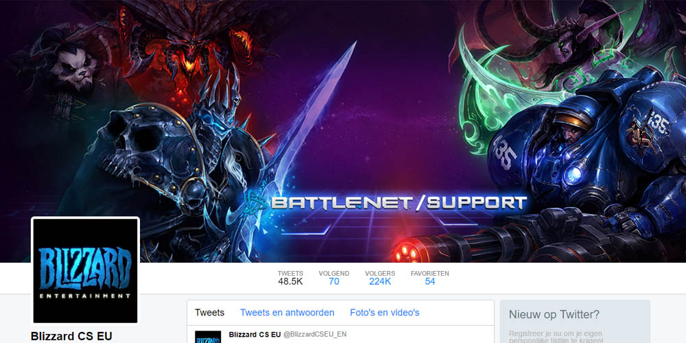

Dit is een website die werd gemaakt als opdracht wanneer ik in het zesde jaar van het secundair onderwijs zat. We kregen de opdracht om een zelf gekozen Twitterpagina na te maken. Mijn Twitterpagina is die van Blizzard. Deze opdracht diende als herhalingsoefening in het begin van mijn zesde jaar in het secundair onderwijs.
Ga terug naar ons portfolio
Gemaakt door: Thomas Hayen